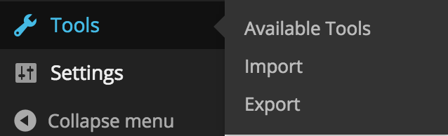
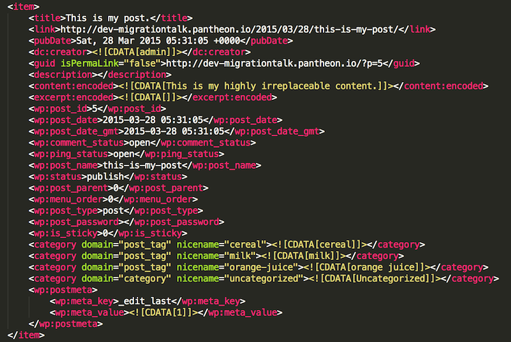

Content Migration: Beyond WXR
Matt Johnson / @xmatt / alleyinteractive.com
- We are a multi-platform dev agency
- WordPress.com VIP partner
- Hiring!
Disclaimer
We're gonna talk about code!
What is migration?
- Your client has an old site (maybe WordPress, maybe something else).
- You're making them a new site.
- Their old site has content in it. They worked hard on that content!
Attitudes vary
- Some clients are obsessed with migration.
- Others don't even think about unless you do.
- Question: If you didn't migrate their content, how long after launching the new site would it take them to notice? ;)
Content migration can be one of the most fun parts of a project...
- Reverse-engineering weird legacy systems.
- Building code to clean up and format your content real nice.
- The satisfaction of processing thousands (or hundreds of thousands) of posts with a single CLI command.
...or one of the least fun
- Oops, legacy content is Windows-1252 content encoding, WordPress speaks UTF-8.
- Half the authors are mysteriously missing.
- "Oh hey, Matt, we have this microsite we forgot to tell you about until right now, a week before the launch. Can we just merge it into the main site's migration?"
The Basics
- Content migration is moving all your user-generated content from one place to another, accurately.
- Sometimes the old data maps to the new data really easily.
- Other times, migration is part of a project that also overhauls the site's information architecture.
↓
↓
The Easiest Type of Migration
- WXR out.
- WXR in!
What's in a WXR file?
What's in a WXR file?
- All the columns of the
wp_poststable - The author's name (in text)
- Taxonomy and postmeta values
When to look beyond WXR
- The old site isn't WP.
- We're handling images differently on the new site.
- We're adopting a new information architecture, such as...
- Switching from users-as-authors to Co-Authors Plus
- Loading custom metadata into Fieldmanager
- Remapping all the taxonomy
- Adding several custom post types
Plan A: Make Your Own WXR
- Can be unwieldy; need code to hook into the old data and generate XML.
- Still limited by the format of WXR.
- As long as you're writing custom migration code, why not take total control?
Plan B: Fix up your data after WXR
- Run a WXR import, see what went wrong or is missing.
- Write a WP-CLI script to finish it.
Brief WP-CLI Detour
- WP-CLI lets you write WP code that can be run from the command line.
- You could do the same via a custom plugin and a tool page, but there are runtime limits.
Making a WP-CLI script is easy
In functions.php for your theme:
if ( defined( 'WP_CLI' ) ) {
require_once( MY_THEME_DIR . '/inc/class-migration-cli.php' );
}
In class-migration-cli.php:
class Migration_CLI extends WP_CLI_Command {
public function fix_my_data( $args, $assoc_args ) {
$per_page = 100;
$page = 0;
do {
$posts = get_posts( array(
... // Your WP_Query arguments here.
'posts_per_page' => $per_page,
'offset' => $per_page * $page++,
) );
foreach ( $posts as $post ) {
// Do your stuff here.
wp_update_post( $post );
}
} while ( $per_page == count( $posts ) );
}
}
WP_CLI::add_command( 'migration', 'Migration_CLI' );
Then run it on your server, local dev, or what have you:
$ cd /var/www/my_wp_site.com
$ wp migration fix_my_data
OK, back to Plan B!
- If this gets you where you're going, great!
- Is it more of a hassle to even bother with WXR?
Plan C: Goodbye WXR, Hello ETL
- ETL means extract, transform, load.
- It's the pattern most totally custom migration scripts will take.
Returning to class-migration-cli.php:
class Migration_CLI extends WP_CLI_Command {
public function migrate_data( $args, $assoc_args ) {
$this->connect_to_legacy_source();
while ( $this->has_legacy_data() ) {
// Extract:
$row = $this->get_legacy_post();
$post = array(
'post_type' => 'post',
'post_title' => $row['title'],
'post_content' => $row['content'],
'post_date' => date( 'Y-m-d H:i:s', strtotime( $row['date' ] ) ),
)
// Transform:
if ( $row['is_slideshow'] ) {
$post['post_type'] = 'slideshow';
}
// Load:
$post_id = wp_insert_post( $post );
update_post_meta( $post_id, 'legacy_id', $row['id'] );
if ( $row['is_slideshow'] ) {
update_post_meta( $post_id, 'slides', $this->get_legacy_slides( $row['id'] ) );
}
}
}
}
WP_CLI::add_command( 'migration', 'Migration_CLI' );
The Importance of Idempotence
This line:
update_post_meta( $post_id, 'legacy_id', $row['id'] );
if ( $post_id = $this->new_post_exists( $row['id'] ) ) {
$post['ID'] = $post_id;
wp_update_post( $post );
} else {
$post_id = wp_insert_post( $post );
}
Functions I didn't write for you
has_legacy_data(): returntrueuntil no legacy items left.get_legacy_post(): returns an array with the next legacy item.get_legacy_slides(): returns some special structured data (like slides in a slideshow).new_post_exists(): returns thepost_idof the WP post with this legacy id, orfalseif there isn't one.
Some legacy source examples
- A MySQL database (any weird schema).
- A pile of XML or JSON files.
- An RSS feed.
- A REST API.
Ask me later (or now) about...
- Dealing with images (super annoying but clients love 'em!)
- Dealing with Co-Authors Plus
- Getting your migration onto WordPress.com VIP
The End
Want to do cool stuff like this?
We're hiring.
info@alleyinteractive.com
#beyondwxr